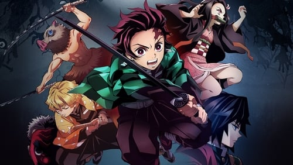

This is only based off on our opinion.
Dororo is an anime about a boy who gets eaten by demons. He is nothing but a head with no limbs, ears, mouth and face. He is still alive but his dad abandoned him until he met a man who makes prosthetics. The boy was fighting for his life and the man made prosthetics for him and named him Hyakkimaru. He has no emotions and is dead inside. One day he slayed a ghoul and his left leg started to turn to a human leg. Will Hyakkimaru ever get his whole body back? I recommand this anime for people who like fantasy and adventure.
Attack on Titans is an anime show about how to protect humanity from fatal giants named "Titans". There are three territories that are protected by these humanoids.They are protected by walls that are at least 50 metres high.The main protagonists in this anime is Eren, Mikasa and Armin. One day, the walls were broken down by two titans and the territory was destroyed and many live's were lost. Will the three children ever have freedom? Will they restore their land again? This anime is fit for people who like adventure and dark fantasy.
Demon Slayer is an anime show about a boy named Tanjirou who lives on top of the moutains with his mom and siblings. He is the eldest of the family and went out to sell things in the village. When he came back, he found that his whole family was slaughtered. He smelled a scent that he had never smelled before. He noticed that his sister was still alive and travelled to find a doctor. She suddenly turned to a demon and she tried to kill her brother. Will Tanjirou ever save his little sister? Will he avenged his family? This anime is for people who like action, adventure and fantasy.
The Promised Neverland is an adventure, mystery anime that has three protagonist named Emma, Ray and Norman. They live in an "orphanage" called Grace Field House. They take daily exams and have delicious food and plenty of playtime. This orphanage isn't what it seems...one of their "siblings" got killed by a demon. Two of the children found out that this house is actually a place where they farm children to feed the demons. Will the children ever have freedom? Who will accept their fate next?
Fullmetal Alchemist/Brotherhood is about two brothers named Alphonse and Edward. Edward is a state alchemist and is only 12 years old. One day their mother passed away and the two brothers were very sad. Edward tried using his alchemy to bring back his mother even though it was against the rules. In exchange, his arm and leg were gone and his brother lost his whole body. Edward put his brother's soul in a suit of armour. Will the adventure of the brothers give them their original body back? What is their fate ahead?
Another is a horror and mystery anime. It takes place in Japan in a school. A new student transfered in that school and was placed in class 3. His new classmates are a bit sensitive and weird. There are strange people in the class and one of them doesn't exist. There's a big mystery in the class. Is it normal or is there a curse?
Rising of the Shield Hero is a new anime of 2019. Theres a college student named Naofumi Iwatani. One day he went to the library and found a strange book and read it. Next thing he knows, he is summoned in a fantasy world with three other males. They are summoned hero's. One is the spear hero, one is the sword hero, one is the bow hero and last but not least the weakest of them all, the shield hero; Naofumi Iwantani. Sooner or later, Naofumi becomes broke and betrayed. How will he survive?
Noragami is about a stray god who doesn't have a shrine. The gods name is Yato. Yato is the god of calamity or war. There are rumours about his past and how fatal it was. He slained millions of people and he can't stop until he met a girl. What is Yato's future? Who is this girl?
Death note is an anime that was made into a manga. The main protagonist is named Light Yagami. He is a teen genius who came upon a very mysterious notebook;death note which was someone's.The user has the power to kill anyone if they write in the notebook by writing down their name. There are a few rules into writing in the notebook. What will happen to Light? What will the owner accept next?
Erased is an anime that has supernatural and mystery as their genre. The main protagonist in this television series is Satoru Fujinuma. Satoru has a special power. His power is reversed time. Whenever there is something wrong in the area he's in, like murder for example. He goes at least a few seconds back in time. One day his mother was murdered and he was accused for murder. His special power activated and he went back 18 years in time. Will Satoru fix his past? Who was the murderer?